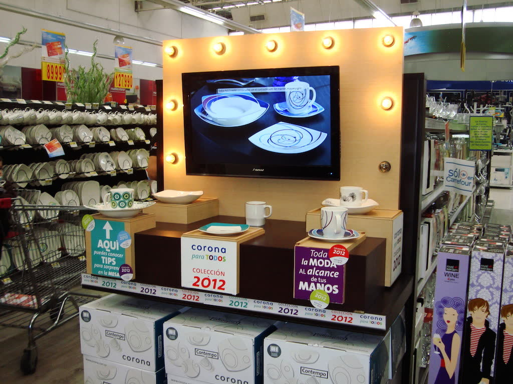
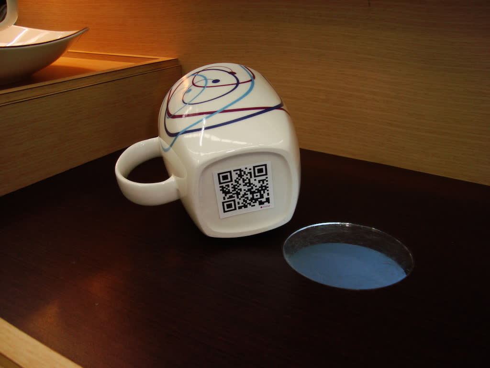
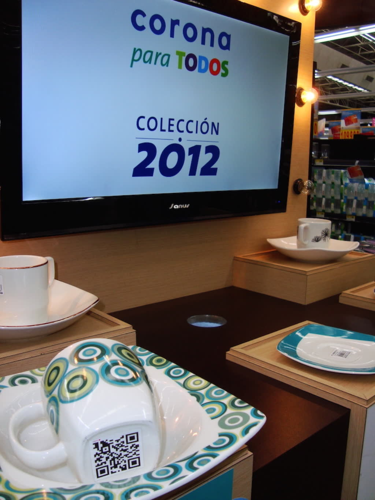
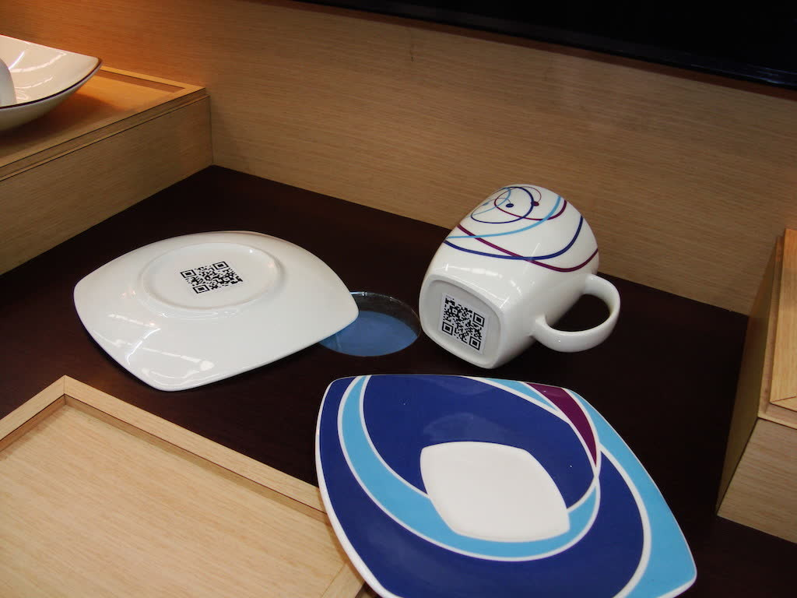
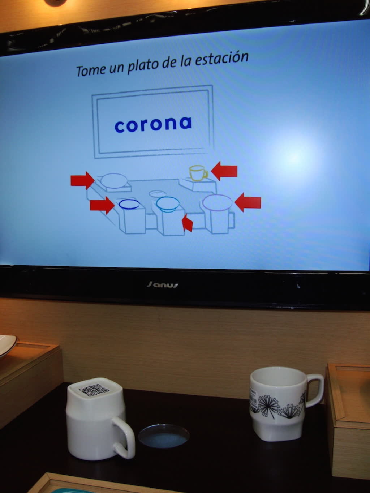
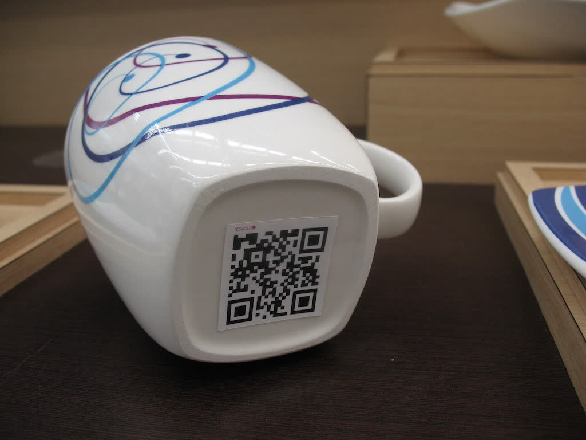
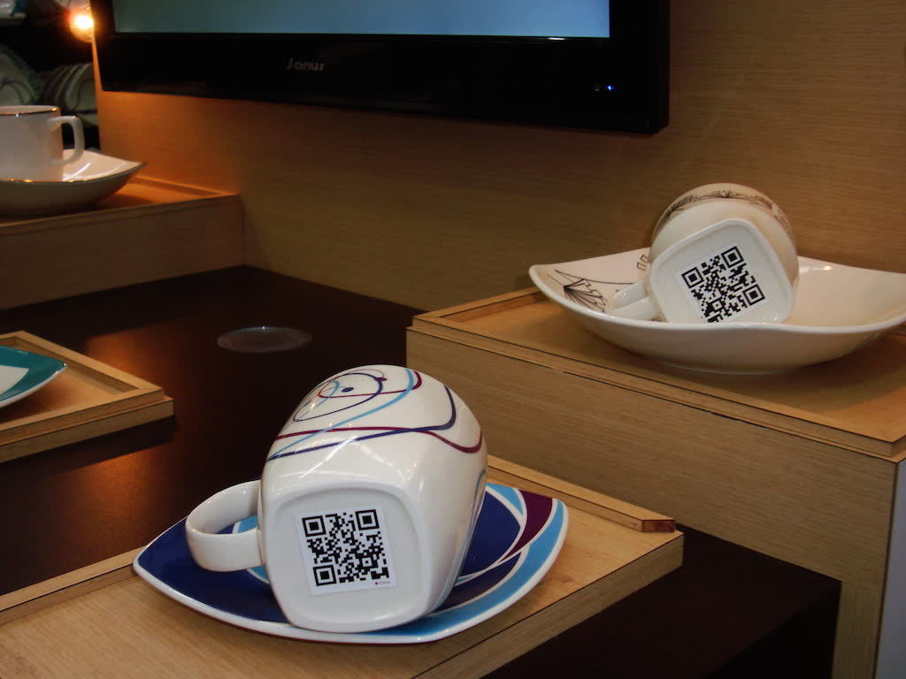
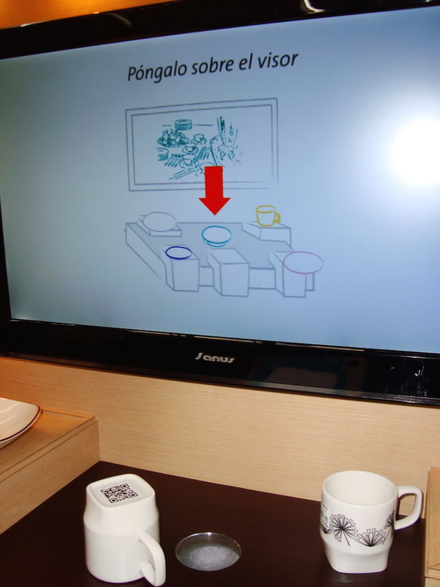

Corona tableware launch
- Date
- 2012
- Venue
- Activation points at Home Center, Bogotá
- Role
- Programmer
- Technologies
- QR

Interactive stations for the launch of Corona's 2012 tableware collection.






